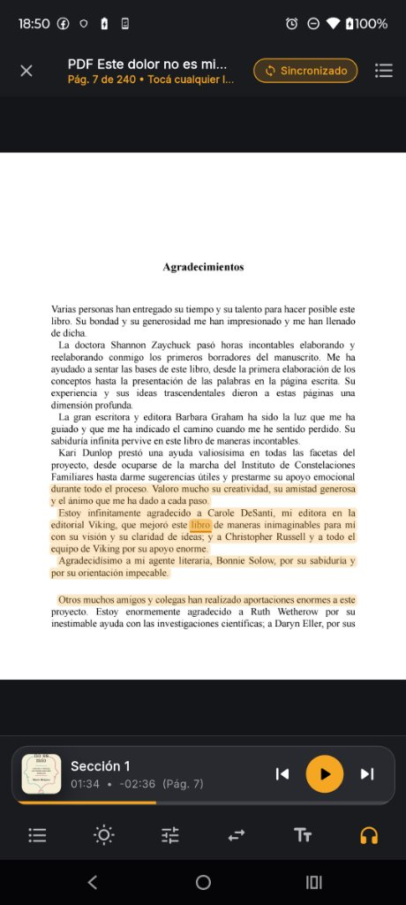

Voces que suenan humanas
Elegí entre 13 voces naturales de Argentina, México, Colombia, España, EE. UU. y Reino Unido. Ajustá la velocidad desde relajada (0.7x) hasta rápida (2.0x) para estudiar más rápido.
Subí cualquier archivo PDF o EPUB desde tu celular o Google Drive y escuchalo con voces naturales que suenan humanas. ¿Tu libro está en inglés? Audibuuks lo traduce automáticamente al español y te lo lee en voz alta. Además podés descargar capítulos para escuchar sin internet y seguir la lectura palabra por palabra.

Cuando cargás un PDF o EPUB en inglés, Audibuuks lo detecta automáticamente y te pregunta si querés traducirlo al español o escucharlo en su idioma original. Lo traduce mientras empezás a escuchar — sin esperas eternas — y podés cambiar entre inglés y español cuando quieras con un solo toque.
"Success is the product of daily habits—not once-in-a-lifetime transformations."
"El éxito es el producto de los hábitos diarios, no de transformaciones que ocurren una sola vez en la vida."
Sin suscripciones, sin límites de libros y sin voces robóticas. Todo lo que necesitás para estudiar, leer novelas o aprovechar tus viajes diarios.
Elegí entre 13 voces naturales de Argentina, México, Colombia, España, EE. UU. y Reino Unido. Ajustá la velocidad desde relajada (0.7x) hasta rápida (2.0x) para estudiar más rápido.
Seguí la lectura con resaltado palabra por palabra sobre tu PDF original o en modo texto limpio. Tocá cualquier oración para empezar a escuchar justo desde ahí, buscá palabras, hacé zoom cómodo o cambiá a modo Sepia / Noche.
Descargá un capítulo o el libro completo rapidísimo incluso con la pantalla apagada. Perfecto para el subte, viajes en ruta o avión sin gastar datos móviles ni sufrir cortes.
Importá tus archivos PDF y EPUB en un toque o pegá directamente un enlace compartido de Google Drive (incluso libros pesados de más de 100 MB) y Audibuuks arma los capítulos automáticamente.
Agregá música clásica suave de fondo para concentrarte, guardá apuntes con colores en cada capítulo y activá el temporizador de sueño para que el volumen baje suave hasta apagarse solo.
Cuando salen nuevas funciones o mejoras, Audibuuks te avisa directamente en tu biblioteca. Tocás "Actualizar ahora" y se instala encima conservando todos tus libros, notas y progreso intactos.
Hecha para acompañarte todos los días sin trabarse a mitad de un capítulo ni gastar batería de más.
Tocás cualquier oración en tu PDF o EPUB y la voz salta directo a ese punto sin que la página salte sola a otra hoja.
Baja varios párrafos a la vez y va pre-cargando lo que viene adelante tuyo (como un video de YouTube) para que no haya pausas.
Recuerda el segundo exacto donde dejaste cada libro y guarda cada letra de tus notas al instante, incluso si se te apaga el celular.
Podés guardar el teléfono en el bolsillo y controlar pausa o avance desde la pantalla de bloqueo o tus auriculares Bluetooth.
Tocá cada pantalla para conocer cómo funciona la app en tu celular.
Mientras escuchás, Audibuuks te muestra el texto y resalta cada palabra en vivo. Podés cambiar la velocidad, elegir tu voz favorita, agregar música suave de piano o anotar ideas sin salir del libro.
Voces cálidas y expresivas en español de Latinoamérica y España, más voces nativas en inglés si preferís practicar o escuchar libros en su idioma original.
Todo lo mejor de un lector de libros y una app de audiolibros, gratis y sin anuncios.
| Lo que necesitás | Audibuuks | Lectores PDF comunes | Apps de audiolibros pagas |
|---|---|---|---|
| Usar tus propios libros y apuntes (PDF / EPUB) | ✓ Ilimitados (celular y Google Drive) | Solo texto o voz robótica | No te dejan subir tus libros |
| Traducir libros en inglés a audiolibro en español | ✓ Automático con 1 toque | No incluido | No incluido |
| Escuchar sin internet en cualquier viaje | ✓ Descargá capítulos o libros enteros | No incluido | Solo pagando suscripción |
| Notas por capítulo + música de piano suave | ✓ Todo integrado en la app | Muy limitado | No incluido |
| Actualizaciones fáciles | ✓ Te avisa adentro de la app | Manual | Tienda oficial |
| Costo mensual y publicidad | ✓ 100% Gratis · Sin anuncios | Anuncios o planes pagos | Suscripción mensual |
Funciona en prácticamente cualquier celular Android. A partir de esta versión, las próximas actualizaciones te llegan solas dentro de la app.
Presioná el botón dorado de arriba para bajar el instalador oficial de la última versión (pesa solo ~22 MB).
Tocá el archivo descargado en tus notificaciones. Si Android te pregunta por primera vez, activá "Permitir desde esta fuente" y dale a Instalar.
Elegí un PDF o EPUB de tu celular (o un link de Google Drive) y escuchalo al toque. Cuando haya versiones nuevas, la propia app te avisa para actualizar en 1 clic.
• Volumen de voz potenciado y mucho más claro (ya no hace falta subir el celular al máximo para escuchar). • Portadas exactas en PDF y EPUB (toma la página 1 real y además podés elegir cualquier página o foto de tu galería). • Nuevo aviso automático de actualizaciones dentro de la app (sin perder tus libros ni tus notas). • Descarga de capítulos para escuchar sin internet hasta 5 veces más rápida y reproducción estable sin cortes.
Audibuuks nació para hacer la lectura accesible en cualquier momento del día, convirtiendo libros, apuntes de estudio y textos en inglés en audiolibros cómodos y gratuitos para todos. ¿Tenés una idea o querés seguir los próximos proyectos?
Sí. Apenas cargás un libro en inglés, Audibuuks lo detecta solo y te da la opción de traducirlo al español para leerlo y escucharlo con voces en español. Además podés volver al inglés original cuando quieras con un solo toque.
Para nada. Al actualizar, todos tus libros, notas de estudio, capítulos descargados y el segundo exacto donde dejaste de escuchar quedan intactos.
Sí. Podés descargar capítulos sueltos o el libro completo con un toque desde la lista de capítulos para escuchar en el colectivo, subte o avión sin usar datos móviles.
Es 100% gratis y no tiene publicidad molesta ni límites de cantidad de libros.
Sí. Tus documentos y tus notas se guardan directamente en tu teléfono y nadie más tiene acceso a tu biblioteca.